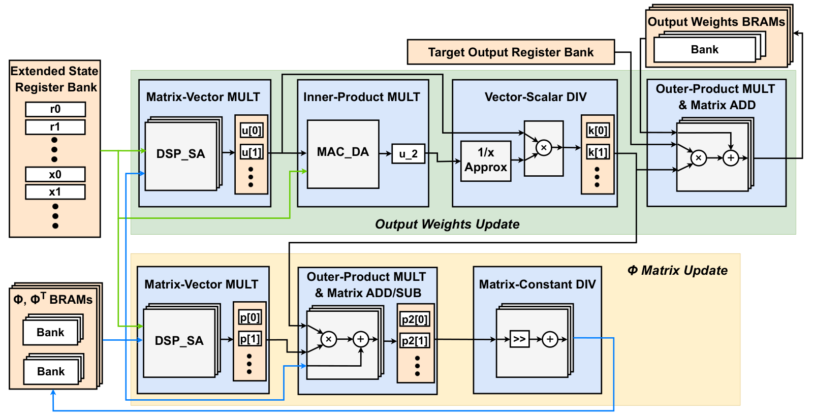
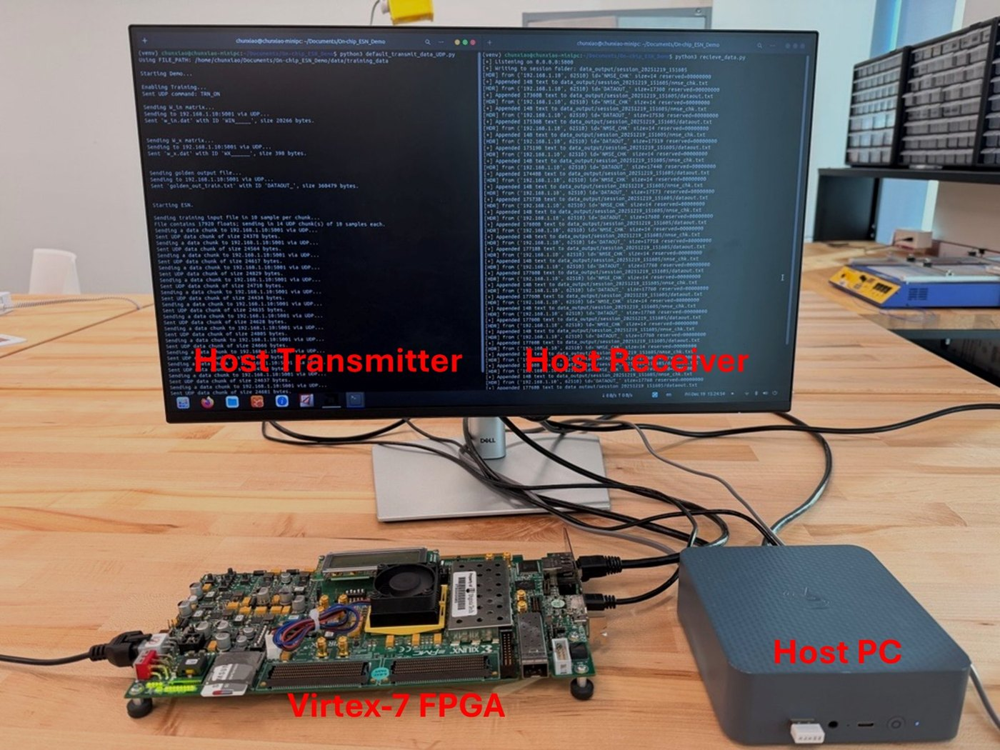
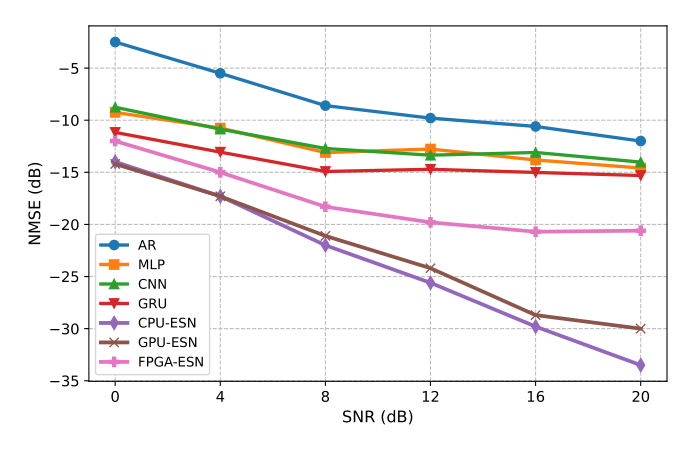
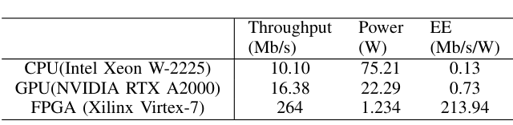
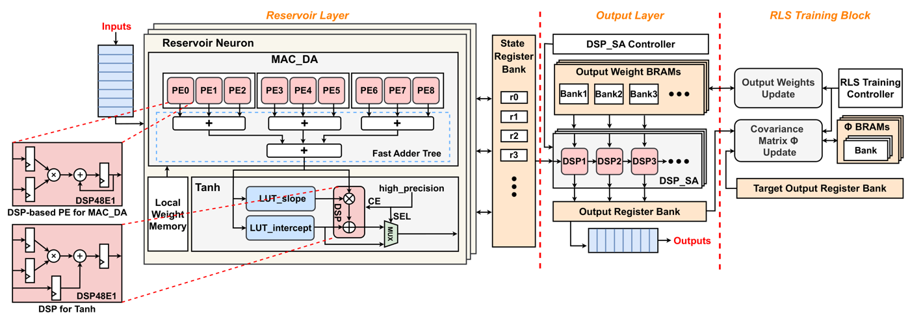

On-chip RLS learning for MIMO channel prediction
MIMO channel prediction needs a model that keeps learning from fresh pilot data within a fraction of a millisecond, but prior Echo State Network (ESN) work ran on CPUs/GPUs or put only inference on an FPGA. This work builds a complete ESN on a Virtex-7 FPGA in which both inference and recursive-least-squares (RLS) training run on chip in 16-bit fixed point, validated on a real-time PC-FPGA testbed.
Design
Reservoir layer (MAC_DA + RALUT tanh)
Each reservoir neuron fuses its input and recurrent products into one multiply-accumulate over the concatenated vector {x; r}. A MAC_DA unit runs nine DSP48E1 slices in parallel and merges their partial sums with a carry-save/carry-lookahead adder tree, finishing in ⌈(Ni+Nr)/9⌉+2 cycles. The tanh uses a 256-entry LUT with DSP-based linear interpolation that is bypassed in the flat high-input region to save dynamic power.
Output layer (DSP_SA systolic array)
The 64-output readout is a matrix-vector product handled by DSP_SA, a 1-D systolic array of cascaded DSP48E1 slices that passes the state vector from DSP to DSP. An N-DSP array finishes an (N×M)·(M×1) product in N+M+1 cycles with every DSP busy; the output weights are split across banked BRAMs and eight-DSP arrays run in parallel.
Inversion-free RLS training block
The RLS update is split into an output-weight module (Kalman gain and weight update) and a covariance-matrix module, each with its own DSP_SA for the large matrix-vector products, while MAC_DA is reused for the inner product. Division is replaced by a leading-one-detector reciprocal LUT with a barrel shifter, and division by the fixed forgetting factor λ = 0.999 by a shift-and-add.
Pipelining and fixed-point design
A three-stage pipeline (gain element, parallel weight/covariance MACs, shift-and-add) updates both W_out and Φ in 2(Ni+Nr)+4 cycles. Every variable has a Q-format chosen from floating-point range analysis, and inference and per-sample training latency both grow linearly with the state size L = Ni+Nr even though the RLS arithmetic is quadratic.

Real-world setup
The design was validated on a real-time testbed: a host PC streams training and test data to the Virtex-7 FPGA over Ethernet and receives the predictions back.

Results
- One full training-plus-inference step takes 3.87 µs at 100 MHz (inference alone 0.97 µs, 65.98M samples/s); a 14-symbol subframe (4 training pilots + 10 predictions) takes 0.025 ms, within the sub-millisecond Next-G budget.
- Energy efficiency is 213.94 Mb/s/W (264 Mb/s at 1.234 W), versus 0.13 for an Intel Xeon W-2225 CPU and 0.73 for an NVIDIA RTX A2000 GPU running the same ESN with RLS: more than 1600× and 290× higher.
- Against prior FPGA ESNs with on-chip training, area efficiency is 17× and energy efficiency more than 1700× that of the pseudo-inverse design of Galán-Prado et al.; area efficiency is 2.6× below a ridge-regression design that handles only a (1, 16, 1) ESN with 1-bit data.
- On a 72×72 matrix-vector product, DSP_SA reaches 12.71 GOPS in 0.81 µs with the highest area efficiency (0.508 GOPS/kNRC), 2.66× and 1.52× better than two prior FPGA MAC designs; its DSP efficiency is 88.9 MOPS/DSP versus 65.0 for the earlier DSP-only MAC.
- For 2×2 MIMO-OFDM channel prediction (NS-3 3GPP V2V urban channel, 10 km/h, 20-symbol horizon), the FPGA ESN beats AR, MLP, CNN and GRU at every SNR from 0 to 20 dB; its gap to the floating-point CPU/GPU ESN is about 2.0–2.3 dB at 0–4 dB SNR and grows to 12.9 dB at 20 dB due to fixed-point effects.
- On Mackey-Glass prediction the hardware NMSE is 0.048 (simulation 0.043), versus 0.256 for the only other FPGA ESN in the comparison with on-chip training.
- Resource cost (NRC) and power scale near-linearly when Ni = No is swept from 16 to 256 and Nr from 8 to 64.


Publication
